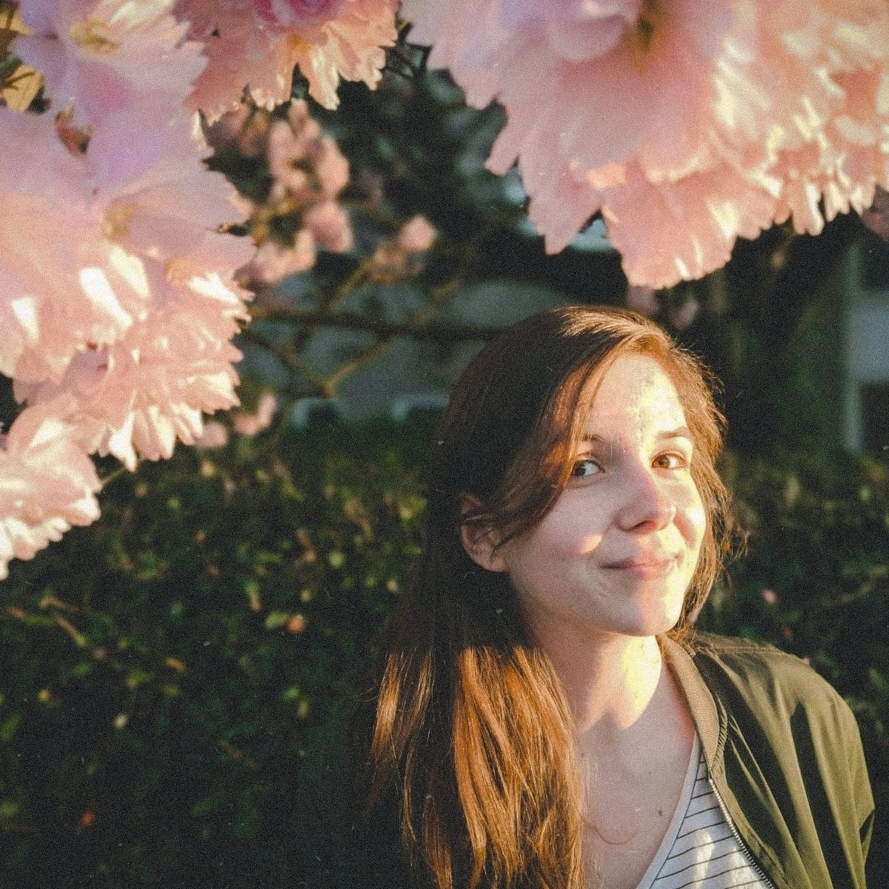

UX & UI design & front-end
Hi! I'm Karolina Harkawy
I'm a Creative Media And Game Technologies student at Saxion University of Applied Sciences, based in Twente, the Netherlands.
I love web development and UX&UI desing and currently I'm looking for an internship as a front-end developer.
Let's work together!
UX&UI design
Carry-on Luggage Scanner
Augmented Reality app made for TUI Nederland. With this app,
travelers can measure the size of their carry-on luggage and find
out if it meets the airline requirements.
Role:
Design
Unity
The Cosmonaut Game
An isometric survival shooter game about outer space, made in
Unity and exported as a WebGL app.
Role:
Design & Development
About me
Karolina Harkawy
I am a 3rd
year student of Creative Media And Game Technologies at Saxion
University of Applied Sciences in Enschede, the Netherlands. During
my studies I am exploring various creative paths, from film and
photography, through graphic design and 3D modelling, to
programming.
I love discovering the ins and outs of web development and UX
design, and including my multidisciplinary knowledge in the
projects.
In between I spend time on hobbies: house plants,
photography and microadventures.
- - HTML, CSS
- - JavaScript: modules, working with APIs, promises
- - Craft CMS
- - Basic use of Git
- - Adobe package: XD, Photoshop, Illustrator
- - Unity basics
- - UI&UX: responsive design, accessibility, Material Design, user testing
Skills:
You can check out my CV here.
I'm up for new challenges and projects. If you are looking for someone to work on the web development and design, feel free to contact me.
Send me an email to kar.harkawy@gmail.com